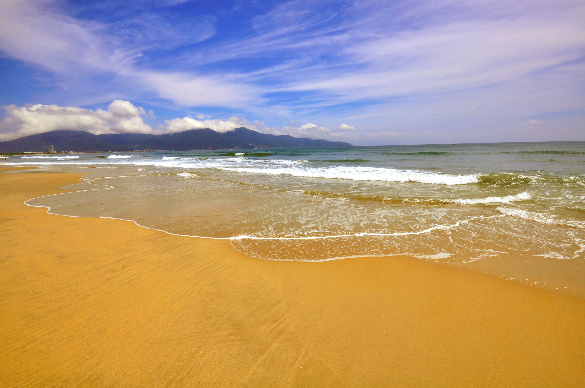

hành phố Đà Nẵng nằm ở miền Trung Việt Nam, ở giữa trung tâm Thủ Đô Hà Nôi và Thành phố sôi động nhất cả nước Hồ Chí Minh. Rất dễ tiếp dàng cho du khách tiếp cận, Đà Nẵng có sân bay quốc tế với công suất 6 triệu khách/năm và hiện có nhiều đường bay trực tiếp quốc tế. Cảng nước sâu Tiên Sa là nơi thường xuyên tiếp nhận du thuyền cao cấp, đưa du khách đến với Đà Nẵng.Đà Nẵng còn là trạm dừng chính của các tuyến xe lửa và xe khách. Ngoài ra, nó cũng mang nét  hấp dẫn riêng biệt bởi vị thế tựa lưng vào dải Trường Sơn hùng vĩ, lại có bán đảo Sơn Trà vươn ra biển. Bên cạnh đó, Đà Nẵng rất gần với những di sản văn hóa nổi tiếng không chỉ ở nước ta mà cả thế giới đó là Cố Đô Huế và phố cổ Hội An và Thánh Địa Mỹ Sơn. Từ Đà Nẵng du khách có thể di chuyển dễ dàng và nhanh chóng đến các địa điểm này. Mặc dù là một thành phố lớn của cả nước nhưng nơi đây trong lành và yên bình, rất hiếm khi xảy ra tình trạng kẹt xe, thành phố rất an ninh trật tự, không có người lang thang xin ăn, không có người nghiện ma túy trong cộng đồng. Cho nên du khách có thể hoàn toàn an tâm khi đi du lịch Đà Nẵng, thỏa mái khám phá những góc phố, con đường mà mình muốn đi.